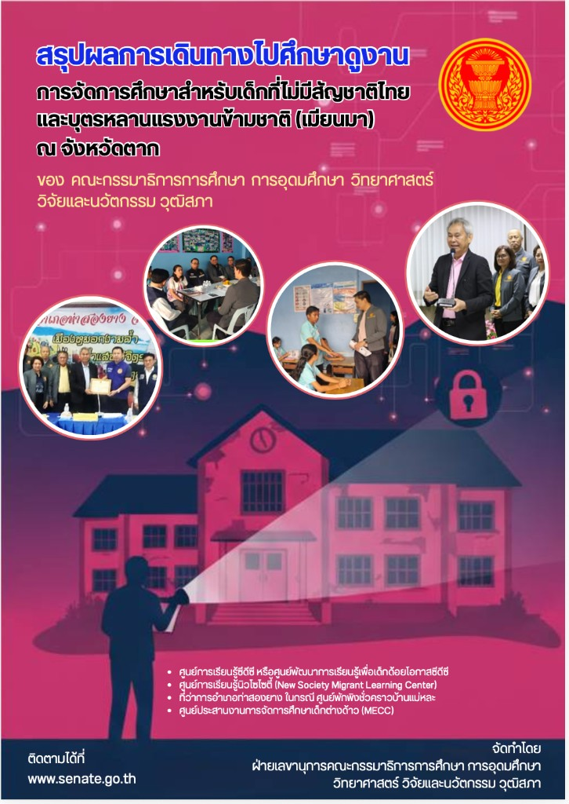

สิบกว่าศูนย์ขึ้นทะเบียนแล้ว แต่คุณวุฒิยังไปต่อไม่ได้ทั้งระบบ
ศูนย์ CDC, New Society, พื้นที่พักพิงบ้านแม่หละ และศูนย์ประสานงาน MECC
เนื้อหานี้สรุปจากเอกสารของฝ่ายเลขานุการคณะกรรมาธิการการศึกษา การอุดมศึกษา วิทยาศาสตร์ วิจัยและนวัตกรรม วุฒิสภา โดยคณะอนุกรรมาธิการการส่งเสริมการเรียนรู้ฯ ร่วมเดินทางและรับฟัง เป็นหลักฐานประกอบการพิจารณาศึกษา ยังไม่ใช่รายงานฉบับสมบูรณ์ที่วุฒิสภาให้ความเห็นชอบ
เมื่อ: ๒๐–๒๒ มีนาคม ๒๕๖๘ · สถานที่: จังหวัดตาก · ประเภท: ศึกษาดูงาน
ตากเป็นชายแดนตะวันตกที่มีทั้งลูกหลานแรงงาน ผู้ย้ายถิ่น และผู้พักพิง คณะดูงานศูนย์พัฒนาการเรียนรู้เพื่อเด็กด้อยโอกาสซีดีซี (CDC) ศูนย์ New Society พื้นที่พักพิงชั่วคราวบ้านแม่หละ และศูนย์ประสานงานการจัดการศึกษาเด็กต่างด้าว (MECC) ภายใต้ สพป.ตาก เขต ๒
ต่างจากสมุทรสาครที่ศูนย์เอกชนยังอยู่นอกระบบ ตากมีกลไกขึ้นทะเบียนระดับพื้นที่แล้ว แต่คุณวุฒิ กฎหมายระดับชาติ และชีวิตในศูนย์พักพิงยังไม่ต่อกันเป็นระบบเดียวกัน
ข้อค้นพบ
สาระที่ควรอ่านบนเว็บ
MECC ประสานห้าอำเภอชายแดน ขึ้นทะเบียนศูนย์การเรียน จัดแนวปฏิบัติ และให้คำปรึกษาด้านหลักสูตร ข้อมูลในสรุประบุศูนย์ที่ขึ้นทะเบียน ๖๓ แห่ง มีนักเรียนราว ๑๗,๘๒๔ คน แต่ยังไม่มีกฎหมายระดับชาติรองรับศูนย์การเรียนเด็กต่างด้าวโดยตรง แนวปฏิบัติจึงขึ้นกับพื้นที่
ศูนย์ก่อตั้งปี ๒๕๓๕ ภายใต้แม่ตาวคลินิก ปัจจุบันสอนอนุบาลถึง ม.๖ มีผู้เรียน ๑,๒๑๘ คน ครู ๕๙ คน เป็นครูไทย ๑๐ คน หลักสูตรที่หนึ่งคือ สกร. นอกระบบ ครู สกร.อำเภอแม่สอดสอนสัปดาห์ละสองวัน ปี ๒๕๖๗ มีผู้สมัครเข้า สกร. ๑๗๔ คน จบแล้ว ๒๑ คน และเข้ามหาวิทยาลัยไทยได้ ๒ คน หลักสูตรที่สองคือ GED รับปีละประมาณ ๓๐ คน หลักสูตรที่สามเป็นหลักสูตรเมียนมาเพื่อกลับประเทศต้นทาง สอนภาษาไทยเป็นวิชาเสริม
แม้มีผู้เรียนจบแล้วไปต่อได้บางเส้น แต่สถานะของศูนย์ยังไม่ใช่โรงเรียนหรือศูนย์การเรียนตามระเบียบกระทรวงศึกษาธิการ คุณวุฒิจึงยังไม่มั่นคงทั้งระบบ การดูงานจึงเน้นข้อเท็จจริง ไม่ใช่การรับรองการดำเนินศูนย์
บ้านแม่หละจัดการเรียนในพื้นที่พักพิง ข้อมูลในสรุปมีนักเรียนในโรงเรียนภายในประมาณ ๘,๖๗๔ คน ใช้หลักสูตรกะเหรี่ยง/คะเรนนี วุฒิยังใช้ต่อนอกพื้นที่ไม่ได้ อาคารเป็นสิ่งก่อสร้างชั่วคราว และงบช่วยเหลือจากต่างประเทศลดลง ต่างจากศูนย์ในเมืองที่พึ่งองค์กรเอกชนและ สกร. เป็นหลัก
ข้อสังเกตของคณะ
- คณะฯ เน้นว่ามาฟังข้อเท็จจริง ไม่ได้สนับสนุนการดำเนินศูนย์ที่ยังไม่ถูกกฎหมาย
- ควรเร่งทำให้ศูนย์ถูกกฎหมาย ตรวจสอบข้อมูลผู้ปกครอง และผลักดันเด็กเข้าสู่ระบบรัฐในพื้นที่ที่พร้อม
- เขตพื้นที่เสนอให้ชายแดนเป็นพื้นที่พิเศษที่จัดการศึกษาสองภาษาได้
- เส้นทาง สกร. และ GED ที่ CDC ใช้ได้จริงควรถูกนำไปออกแบบระบบคุณวุฒิระดับชาติ ไม่ใช่ทิ้งไว้เป็นข้อยกเว้นของพื้นที่
เอกสารต้นฉบับ

ยังไม่เปิดให้ดาวน์โหลดบนเว็บไซต์ หากต้องการสำเนาสรุปผลดูงาน สัมมนา หรือเอกสารประกอบการพิจารณา กรุณาติดต่อฝ่ายเลขานุการคณะอนุกรรมาธิการฯ